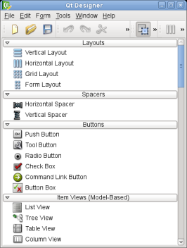
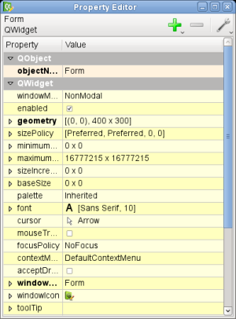
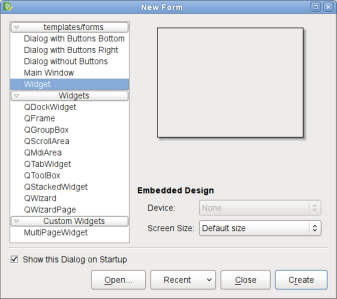
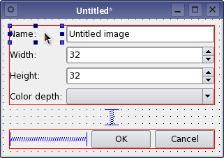
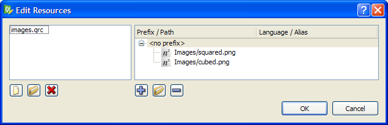

The New Qt Designer
Qt Designer has been completely re-written based on our experience with the previous versions of the product for Qt 3. One of the main new ideas is to release the application as a collection of interchangeable components that include the property editor, the widget box, and other useful tools for creating graphical user interfaces with Qt. These components can either be used together in the Qt Designer application, or independently integrated into other systems. As a result, certain features such as the project editor and code editor have been removed from the version included with release 4.
See also the Qt Designer Manual.
The Current State of Qt Designer
When used as a standalone application, Qt Designer includes a number of components that work together to provide a flexible GUI design tool. Widgets and dialog windows can be composed using a form-based interface that fully supports drag and drop, clipboard operations, and an undo/redo stack.
This version of Qt Designer introduces a number of editing modes to make different types of editing more natural. Each editing mode displays the form in an appropriate way for that mode, and provides a specialized user interface for manipulating its contents. The current editing modes are Widget Editing, Signals and Slots Editing, Buddy Editing, and Tab Order Editing.
User Interface Features
|  | Widget Box The Widget Box displays a categorized list of widgets and other objects that can be placed on a form using drag and drop. When Qt Designer is in multi-window mode, the window containing the Widget Box also holds the main menu and the tool bar. When in workbench mode, the Widget Box becomes an independent window within the Qt Designer workspace. The contents of the Widget Box are defined in an XML file that holds a collection of .ui documents for standard Qt widgets. This file can be extended, making it possible to add custom widgets to the Widget Box. |
| Property Editor The Property Editor allows designers to edit most properties of widgets and layout objects. The property names and values are presented in an editable tree view that shows the properties of the currently selected object. Certain resources, such as icons, can be configured in the Property Editor. Resources can be taken from any currently installed resource files, making it easier to design self-contained components. |  |
Editing Features
Qt Designer allows form designers to work on different aspects of their forms by switching between specialized editing modes. Tools for editing widget properties, resources, and actions provide context-sensitive information about the forms being edited.
|  | Form Templates Form templates provide ready-to-use forms for various types of widgets, such as QWidget, QDialog, and QMainWindow. Custom templates based on these widgets can also be created. Templates can contain child widgets and layouts. Designers can save time by creating templates for the most common user interface features for repeated use. |
| Widget Editing Mode Qt Designer now allows widgets to be dropped into existing layouts on the form. Previously, it was necessary to break layouts in order to add new widgets to them. Qt Designer now supports more direct manipulation of widgets: You can clone a widget by dragging it with the CTRL key held down, and it is even possible to drag widgets between forms. In-place widget editors provide specialized editing facilities for the most-used widget properties. |  |
| Signals and Slots Editing Mode Qt Designer now employs a "wired" approach when representing and editing connections between objects on a form. The Signal and Slots Editing mode displays all the signal and slot connections on your form as arrows. These arrows can be manipulated visually, and provide the user with an overview of the form's connection logic. Connections can be made between objects on a form and the form itself. This is particularly useful when designing dialogs. |
| Buddy Editing Mode Widgets that cannot accept keyboard input are often given buddy widgets that will take the keyboard focus on their behalf. In Buddy Editing mode, Qt Designer provides a similar approach to that used in the Signals and Slots Editing mode to show the relationships between widgets and their buddies. |  |
 | Tab Order Mode In this mode, users can specify the order in which input widgets accept the keyboard focus. The way that the tab order is defined follows the approach taken in Qt 3's version of Qt Designer; The default tab order is based on the order in which widgets are constructed. |
| The Resource Editor Qt Designer now fully supports The Qt Resource System, and provides the Resource Editor to help designers and developers manage the resources that are needed by their applications. Using the Resource Editor, resources can be associated with a given form, and also modified and extended throught the editor's file browser style interface. The Resource Editor uses files that are processed by various components of the Qt Resource System to ensure that all required resources are embedded in the application. |  |
| The Action Editor With the release of Qt 4.1, Qt Designer the Action Editor was introduced to simplify the management of actions when creating main window applications. When creating a main window, you can add a menu bar and toolbars using Qt Designer's context menu. Once you have the menu bar or a toolbar in place, you can create and add actions using the Action Editor. |
Plugin Support
 | Custom Widgets Plugins can be used to add new custom widgets, special editors, and support for widgets from the Qt 3 support library. Support for custom widget plugins allows user interface designers to use application-specific widgets in their designs as early as possible in the development process. Qt Designer handles custom widgets in the same way as standard Qt widgets, and allows custom signals and slots to be connected to other objects from within Signals and Slots Editing mode. |
| The QtDesigner Module The new modular Qt Designer is designed to be integrated into other environments and extended with custom components. The QtDesigner Module is a library that developers can use to write extensions and plugins for Qt Designer, and enables Qt Designer components to be embedded into Integrated Development Environments (IDEs). With the release of Qt 4.1 the QtDesigner Module is fully documented. The release also provides several new examples using the QtDesigner API to create task menu extensions and custom multi-page widgets (i.e. container extensions). |  |
Run-Time Support for Forms
With the Qt 4.1 release, the new QtUiTools module was introduced to provide classes handling forms created with Qt Designer.
Currently the module only contains the QUiLoader class.
QUiLoader can be used by standalone applications to dynamically create form-based user interfaces at run-time. This library can be statically linked with applications and redistributed under the same terms as Qt.
 | Dynamic Form Creation The QtUiTools library lets developers dynamically construct user interfaces at run-time using the same techniques as Qt Designer. Since forms can contain custom widget plugins, the loading mechanism can be customized to search for third party or application-specific plugins. |
No notes